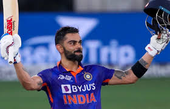
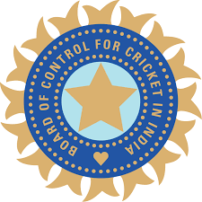
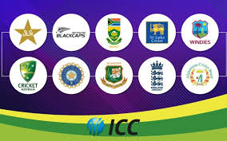
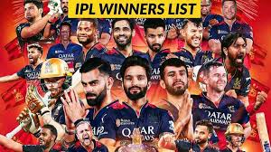
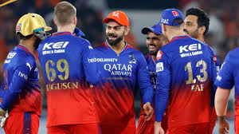

- Background
- Foundation
- Expansions and termination
The World Test Championship is on the verge of crowning its third champion since New Zealand's Black Caps claimed the inaugural tile by beating India in the...
As part of Disability History Month, we will be publishing a number of articles focusing on Somerset Disabled Cricket Club, Somerset VI Cricket Club and the...
Cricket remained the most popular sport in The Bahamas for the first half of the 20th century, however, the islands themselves didn't fare as well.


- Tournament format
- Player acquisition, squad composition and salaries
- Match rules
- Prize money
The ICC Men's Cricket World Cup is a quadrennial world cup for cricket in One Day International (ODI) format
In the Indian Premier League (IPL), player acquisition primarily happens through an auction, with teams also able to trade players .
Cricket is a team sport played between two teams of eleven players. The game involves two central phases: batting and bowling/fielding. .
The Board of Control for Cricket in India (BCCI) is delighted to announce a cash reward of INR 58 Crore for Team India following their triumph at the ICC ...

- Current teams
- Defunct teams
- Timeline
team profile. Australia. team profile. Bangladesh. team profile. England. team profile. India. team profile. Ireland. team profile. New Zealand. team profile. Pakistan. team profile. South Africa. team profile.
Several Indian Premier League (IPL) teams have become defunct over the years. These include Deccan Chargers, Kochi Tuskers Kerala, and Pune Warriors India. Additionally, Chennai Super Kings and Rajasthan Royals were suspended for two years (2016-2017) due to a betting scandal.
Cricket has a rich history with various teams playing pivotal roles. The game was introduced to the Indian subcontinent by European sailors in the 18th century, with the first cricket club established in 1792.

- Performance in the IPL by title
- IPL season results IPL Winners List 2008–2025: Final Results, Opponents, Margins Cricket News: With the 18th edition of the Indian Premier League coming to a close as RCB beat PBKS in the final, here's a look back at the... .4 Jun 2025
n the Indian Premier League (IPL), Mumbai Indians and >Chennai Super Kings are the most successful teams, each with 5 titles.
Kolkata Knight Riders (KKR) has won 3rd titles. Other teams like Rajasthan Royals, Sunrisers Hyderabad, Deccan Chargers,
and Gujarat Titans have each won 1 title. Royal Challengers Bengaluru RCB also won their first title in 2025.

- league stage positions
IPL 2025 results: Get all cricket scores, points table, standings and net run rate Know all IPL 2025 match results, cricket scores and standings of each team in the Indian Premier League points table, including net run rate...